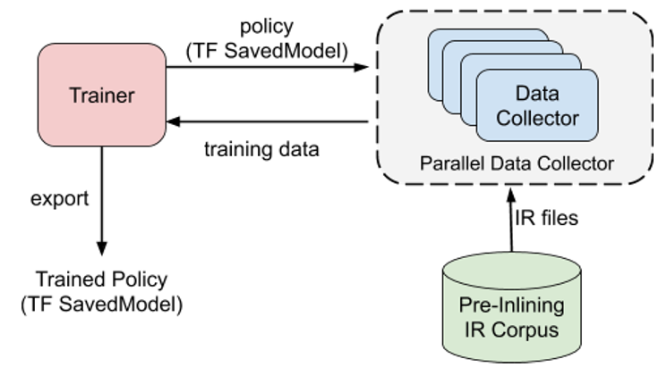

Take the example of this diagram D.

Let M be an end-to-end animation method. Given the diagram D and style S as input, M outputs an animation sequence.
When this generated animation sequence is sent to our evaluation system, the validity gates are passed and the SS, GP and NA metrics provide the following scores.
The sequence-level scores simply tell us that something must have been wrong at a particular step of the animation, but they do not give us details of what is wrong.
AnimateBench, with its human-verified animated narratives, provides us with a high quality cue as to what went wrong.
Comparing the animated narrative produced from M with the human-verified animated narrative from AnimateBench points us to the source of the error.
This affects the Selection Sensibility (SS) score, and the subsequent change in narration affects the Narration Alignment (NA) score.
This was diagnosable only after examining the verified narrative from AnimateBench. The exact source of the error could not be understood by simply looking at the sequence-level scores.